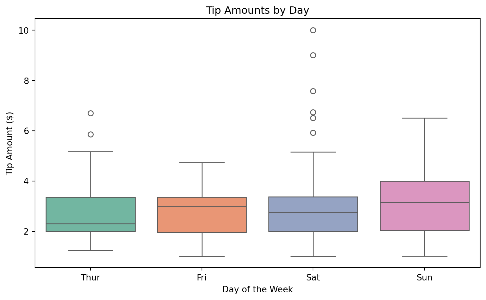
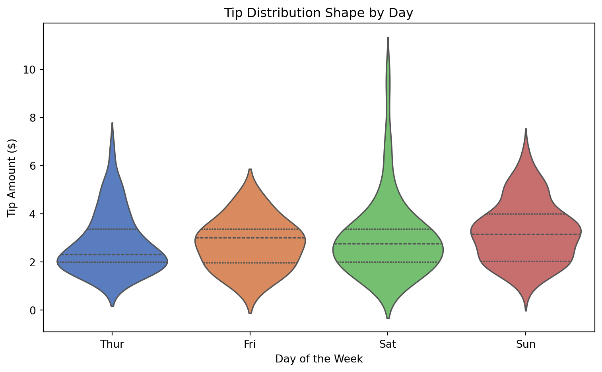
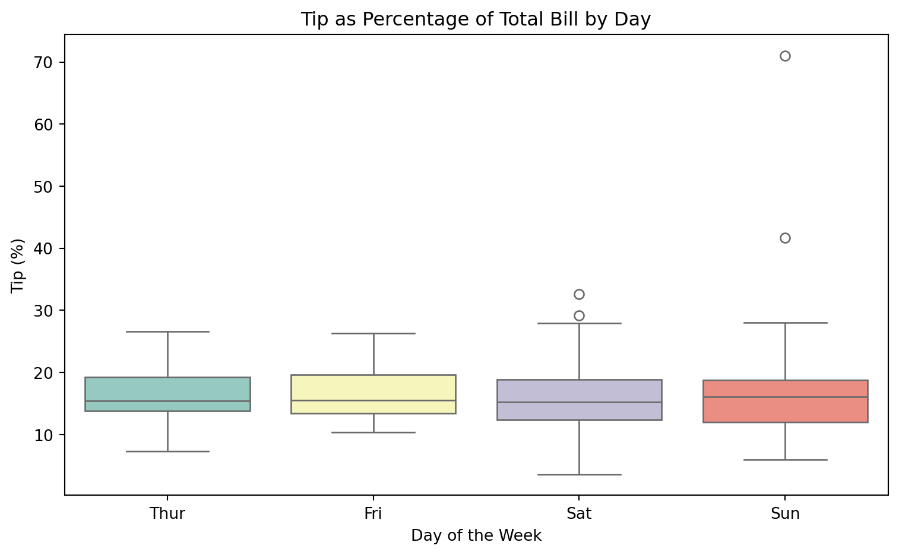
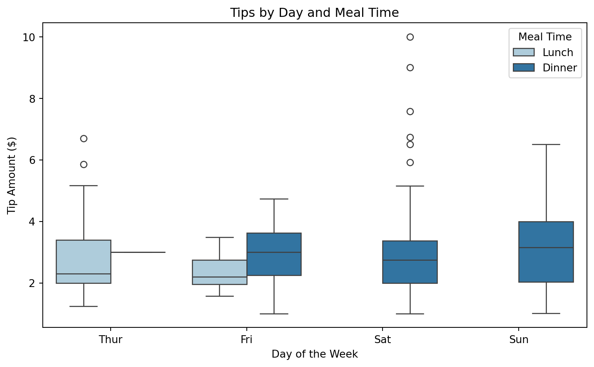
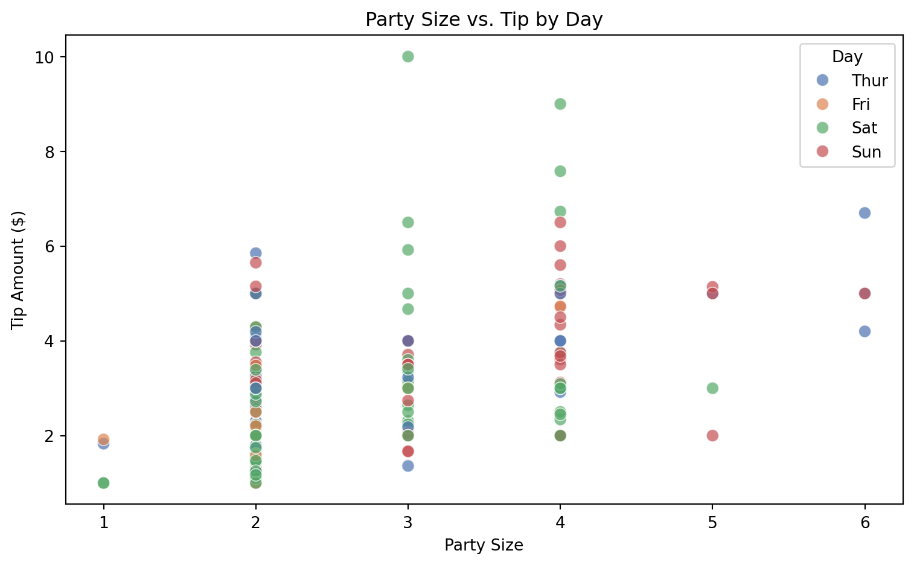
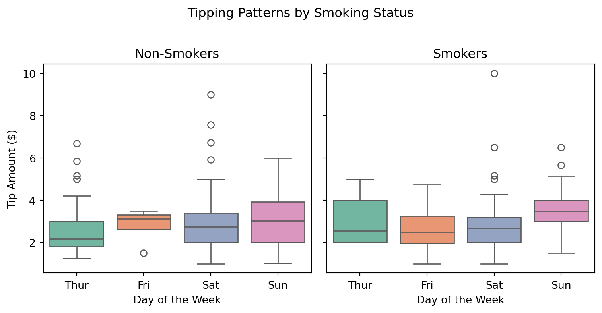

When Do Patrons Tip Best? An Analysis of Restaurant Tipping Patterns
Author
Your Name
Published
February 13, 2026
1 Introduction
This report investigates tipping behavior in a restaurant setting, with a specific focus on identifying which days of the week patrons tend to tip their servers the best. Using the well-known tips dataset available through the seaborn library (Waskom, 2021), we explore how tipping varies across days, meal times, and party characteristics.
Understanding tipping patterns is valuable for restaurant management, server scheduling, and labor economics research. As Tufte (2001) emphasizes, effective data visualization is essential for communicating quantitative findings, a principle we follow throughout this analysis.
About the Dataset
The tips dataset contains 244 observations of restaurant bills, tip amounts, and associated metadata including the day of the week, time of day, party size, and whether the patron was a smoker. The data were originally collected by a single waiter over a period of several months.
1.1 Data Overview
Table 1 presents a summary of the dataset grouped by day of the week.
Show code
summary = tips.groupby("day").agg( n=("tip", "count"), mean_tip=("tip", "mean"), median_tip=("tip", "median"), std_tip=("tip", "std"), mean_bill=("total_bill", "mean"), mean_pct=("tip", lambda x: (x / tips.loc[x.index, "total_bill"] *100).mean())).round(2)summary.columns = ["N", "Mean Tip ($)", "Median Tip ($)", "Std Dev ($)","Mean Bill ($)", "Mean Tip (%)"]# Reorder days logicallysummary = summary.reindex(["Thur", "Fri", "Sat", "Sun"])summary
Table 1: Summary Statistics of Tips by Day of the Week
N
Mean Tip ($)
Median Tip ($)
Std Dev ($)
Mean Bill ($)
Mean Tip (%)
day
Thur
62
2.77
2.30
1.24
17.68
16.13
Fri
19
2.73
3.00
1.02
17.15
16.99
Sat
87
2.99
2.75
1.63
20.44
15.32
Sun
76
3.26
3.15
1.23
21.41
16.69
1.2 Research Questions
This manuscript addresses three primary questions:
Which day of the week yields the highest tips in absolute dollars?
Which day yields the highest tip as a percentage of the total bill?
What contextual factors—such as meal time, party size, and smoking status—interact with day-of-week tipping patterns?
Reading This Report
Each section builds on the previous one. Section 2 examines raw tipping patterns, Section 3 explores moderating variables, and Section 4 synthesizes the findings into actionable insights.
2 Tipping Patterns by Day
We begin by examining how tip amounts and tip percentages differ across the four days represented in the dataset. Following tidy data principles (Wickham, 2014), the dataset is already structured with one observation per row, making it straightforward to analyze with pandas (McKinney, 2011).
2.1 Absolute Tip Amounts
Figure 1 shows the distribution of tip amounts for each day of the week.
Show code
fig, ax = plt.subplots(figsize=(8, 5))day_order = ["Thur", "Fri", "Sat", "Sun"]sns.boxplot(data=tips, x="day", y="tip", order=day_order, palette="Set2", ax=ax)ax.set_xlabel("Day of the Week")ax.set_ylabel("Tip Amount ($)")ax.set_title("Tip Amounts by Day")plt.tight_layout()plt.show()

Figure 1: Distribution of Tip Amounts by Day of the Week
As shown in Figure 1, Sunday shows the highest median tip amount, while Friday tends to have lower and more tightly clustered tips. Saturday and Sunday both exhibit greater variability, likely driven by larger dinner parties on weekends.
2.1.1 Statistical Comparison
To quantify these differences, Table 2 presents the mean and median tip for each day alongside a 95% confidence interval for the mean.
Show code
from scipy import statsrecords = []for day in day_order: day_tips = tips[tips["day"] == day]["tip"] mean = day_tips.mean() se = stats.sem(day_tips) ci = stats.t.interval(0.95, len(day_tips) -1, loc=mean, scale=se) records.append({"Day": day,"Mean Tip ($)": round(mean, 2),"95% CI Lower": round(ci[0], 2),"95% CI Upper": round(ci[1], 2),"Median Tip ($)": round(day_tips.median(), 2) })pd.DataFrame(records)
Table 2: Mean Tip with 95% Confidence Intervals by Day
Day
Mean Tip ($)
95% CI Lower
95% CI Upper
Median Tip ($)
0
Thur
2.77
2.46
3.09
2.30
1
Fri
2.73
2.24
3.23
3.00
2
Sat
2.99
2.65
3.34
2.75
3
Sun
3.26
2.97
3.54
3.15
2.1.2 Violin Plot Perspective
A violin plot provides additional insight into the shape of each day’s distribution. Figure 2 reveals that Sunday tips have a wider spread and a secondary mode at higher values.
Show code
fig, ax = plt.subplots(figsize=(8, 5))sns.violinplot(data=tips, x="day", y="tip", order=day_order, palette="muted", inner="quartile", ax=ax)ax.set_xlabel("Day of the Week")ax.set_ylabel("Tip Amount ($)")ax.set_title("Tip Distribution Shape by Day")plt.tight_layout()plt.show()

Figure 2: Violin Plot of Tip Amounts by Day
2.2 Tip Percentage
Absolute tip amounts can be misleading because they correlate with bill size. A more informative metric is the tip as a percentage of the total bill.
Show code
tips["tip_pct"] = (tips["tip"] / tips["total_bill"]) *100fig, ax = plt.subplots(figsize=(8, 5))sns.boxplot(data=tips, x="day", y="tip_pct", order=day_order, palette="Set3", ax=ax)ax.set_xlabel("Day of the Week")ax.set_ylabel("Tip (%)")ax.set_title("Tip as Percentage of Total Bill by Day")plt.tight_layout()plt.show()

Figure 3: Tip Percentage by Day of the Week
Key Finding
When measured as a percentage of the total bill (see Figure 3), the day-of-week differences narrow considerably. This suggests that much of the variation in absolute tip amounts is driven by differences in bill size rather than differences in generosity.
2.2.1 Percentage Summary Table
Table 3 confirms that mean tip percentages are relatively stable across days, ranging from roughly 15% to 17%.
Beyond the day of the week, several contextual variables may moderate tipping behavior. This section examines meal time, party size, and smoking status as potential confounders or effect modifiers, drawing on statistical learning principles (James et al., 2021).
3.1 Meal Time Interaction
The dataset distinguishes between lunch and dinner. Since certain days only have one meal type (e.g., Saturday and Sunday are dinner-only in this dataset), meal time is partially confounded with day.
Show code
fig, ax = plt.subplots(figsize=(8, 5))sns.boxplot(data=tips, x="day", y="tip", hue="time", order=day_order, palette="Paired", ax=ax)ax.set_xlabel("Day of the Week")ax.set_ylabel("Tip Amount ($)")ax.set_title("Tips by Day and Meal Time")ax.legend(title="Meal Time")plt.tight_layout()plt.show()

Figure 4: Tip Amount by Day and Meal Time
As Figure 4 illustrates, Thursday and Friday include both lunch and dinner observations. Thursday lunch tips are notably lower than Thursday dinner tips, which is consistent with the general pattern that dinner bills—and therefore tips—tend to be larger.
3.1.1 Day-Time Crosstab
Table 4 shows the number of observations for each day-time combination, highlighting the imbalanced design.
Larger parties tend to generate larger bills and, consequently, larger tips. Figure 5 examines whether this relationship varies by day.
Show code
fig, ax = plt.subplots(figsize=(8, 5))sns.scatterplot(data=tips, x="size", y="tip", hue="day", hue_order=day_order, palette="deep", alpha=0.7, s=60, ax=ax)ax.set_xlabel("Party Size")ax.set_ylabel("Tip Amount ($)")ax.set_title("Party Size vs. Tip by Day")ax.legend(title="Day")plt.tight_layout()plt.show()

Figure 5: Relationship Between Party Size and Tip Amount by Day
Confounding Alert
Party size is a strong confounder in this analysis. Weekend days (Saturday and Sunday) tend to have larger parties, which inflates the absolute tip amounts for those days. Any comparison of tips across days should account for party size differences.
3.2.1 Mean Tips by Party Size and Day
Table 5 breaks down mean tip amounts by party size and day.
Finally, we examine whether smoking status interacts with day-of-week tipping patterns. Figure 6 shows tip distributions split by smoker status and day.
Show code
fig, axes = plt.subplots(1, 2, figsize=(8, 4), sharey=True)for ax, smoker_val, title inzip(axes, ["No", "Yes"], ["Non-Smokers", "Smokers"]): subset = tips[tips["smoker"] == smoker_val] sns.boxplot(data=subset, x="day", y="tip", order=day_order, palette="Set2", ax=ax) ax.set_title(title) ax.set_xlabel("Day of the Week") ax.set_ylabel("Tip Amount ($)")plt.suptitle("Tipping Patterns by Smoking Status", y=1.02)plt.tight_layout()plt.show()

Figure 6: Tip Amounts by Day and Smoking Status
Small Sample Sizes
Some day-smoker combinations have very few observations. Interpret the smoking status results with caution, particularly for Friday smokers and Thursday smokers where cell sizes are small.
4 Conclusions and Recommendations
4.1 Summary of Findings
This analysis of the tips dataset (Waskom, 2021) reveals several key patterns regarding day-of-week tipping behavior:
Sunday produces the highest average tip in absolute dollars, as shown in Table 2 and Figure 1.
Tip percentages are more stable across days (Figure 3 and Table 3), suggesting that bill size—not generosity—drives most of the day-level variation.
Party size is a major confounder (Figure 5), with larger weekend parties generating larger tips.
Meal time partially explains within-day variation, particularly on Thursday (Figure 4).
4.2 Practical Implications
For restaurant managers and servers, these findings suggest:
Staffing: Prioritize experienced servers on Sunday dinner shifts, where the highest absolute tips are earned.
Scheduling: Servers seeking higher earnings should prefer weekend dinner shifts over weekday lunch shifts.
Expectations: Tip percentages are relatively consistent (~15–17%) across all days, so higher earnings come from higher-bill tables, not more generous patrons.
4.2.1 Limitations
This analysis has several limitations:
The data come from a single restaurant and a single waiter.
The sample is modest (N = 244) and may not generalize.
Temporal effects (e.g., holidays, seasons) are not captured.
4.2.2 Future Directions
Future work could extend this analysis by incorporating data from multiple restaurants, modeling tip percentage with regression techniques (James et al., 2021), and examining temporal trends over longer periods.
References
James, G., Witten, D., Hastie, T., & Tibshirani, R. (2021). An introduction to statistical learning: With applications in R (2nd ed.). Springer.
McKinney, W. (2011). Pandas: A foundational Python library for data analysis and statistics. Python for High Performance and Scientific Computing, 14(9), 1–12.
Tufte, E. R. (2001). The visual display of quantitative information (2nd ed.). Graphics Press.
Waskom, M. L. (2021). Seaborn: Statistical data visualization. Journal of Open Source Software, 6, 3021. https://doi.org/10.21105/joss.03021